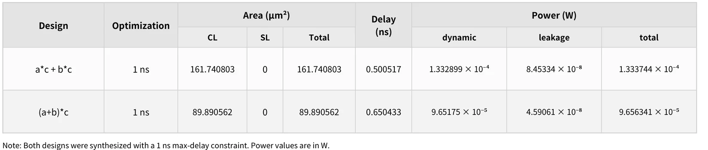
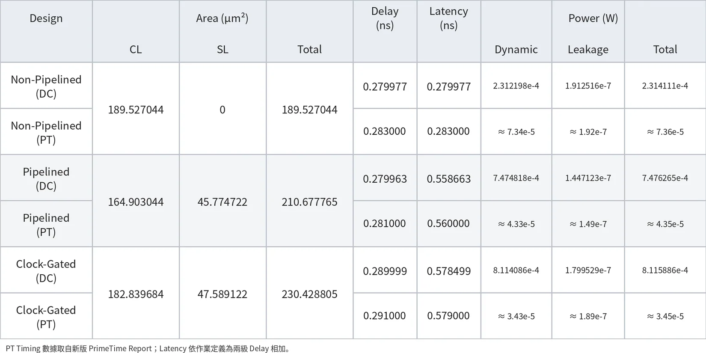
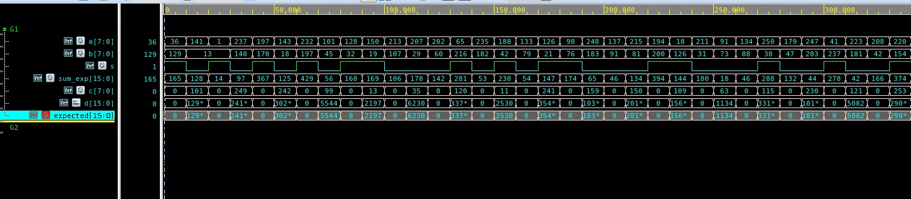
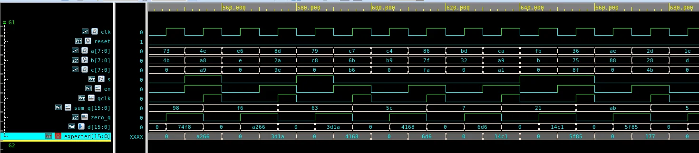
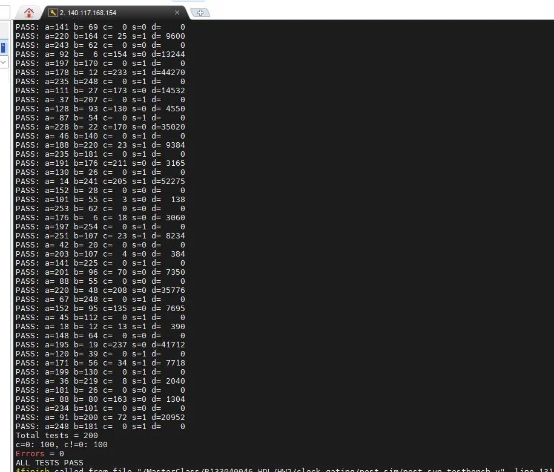
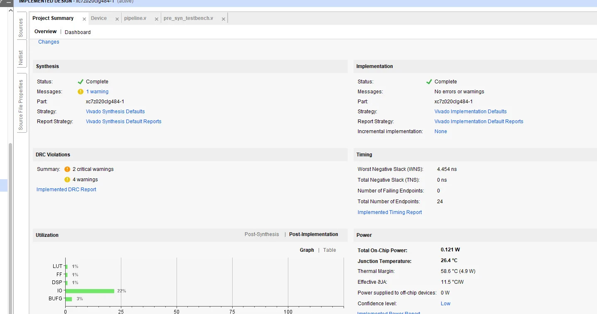

實驗主題：同一個算術運算，透過不同 Verilog 寫法、Pipeline 與 Clock Gating，比較面積、延遲、功耗與模擬結果。整理依據為本人《HW2_Report_PPA_Final_20261024》作業報告。
01 / 作業目標
這次實驗先比較兩種等價的乘加運算寫法，再比較共用加減法器的合成效果，最後實作 Non-Pipelined、Pipelined、Clock-Gated 三個版本。使用 VCS 進行 RTL / Gate-Level 模擬，透過 Design Compiler（DC）取得 PPA，再使用 PrimeTime（PT）及 Vivado 查看實際活動功率與 FPGA Implementation。
核心問題：RTL 是硬體的描述方式，合成器會依運算結構、共享情形及時序約束產生不同的電路。
02 / RTL 寫法如何影響 PPA
兩個算術式子 a*c + b*c 與 (a+b)*c 數學上等價，但對應的運算結構不同。作業報告中的結果顯示，共因式版本使 Area 從 161.740803 μm² 降到 89.890562 μm²（約 44.4%），但 Delay 從 0.500517 ns 增加到 0.650433 ns（約 30.0%）。

我從這個實驗理解到，硬體資源共享通常有助於縮小面積，但運算依賴也可能增加 Critical Path。同樣在加減法器比較中，add_sub_2、add_sub_3 的 Area 為 13.633920 μm²，比 add_sub_1 的 18.455040 μm² 少約 26.1%。
03 / 三種架構對照
| 架構 | DC Area (μm²) | DC Critical Delay (ns) | 特徵 |
|---|---|---|---|
| Non-Pipelined | 189.527044 | 約 0.280 | 組合邏輯，不經 Pipeline Register |
| Pipelined | 210.677765 | 約 0.280 | 兩級運算，使用 Stage Register |
| Clock-Gated | 230.428805 | 約 0.290 | Pipeline 加上時脈活動控制 |

上述是這次報告保留的 DC 結果。面積隨 Pipeline Register 與 Clock-Gating 邏輯增加；時序與功耗則要搭配測試條件及工具報告解讀。
04 / 波形與資料對齊
Non-Pipelined 在輸入更新後，組合邏輯輸出會依電路延遲改變；Pipelined 第一級先記錄 a±b 與 c，第二級在後續 Clock Edge 完成乘法，因此 Testbench 必須把 d 與正確的歷史輸入 expected 對齊。


Clock-Gated 版本在 c=0 時停止部分 Stage 1 Register 的無效切換，同時保留正確的零值處理。

05 / Clock Gating 省電結果
PrimeTime 使用兩組架構相同測試活動的 VCD 功率資訊。作業報告記錄 Pipelined 約 4.35×10⁻⁵ W、Clock-Gated 約 3.45×10⁻⁵ W，在這次測試活動下約降低 20.7%。測試條件為 200 組 Pattern（c=0 與 c≠0 各 100 組）。

Clock-Gating 報告顯示 1 個 ICG、24／41 個 Gated Registers（58.54%）。功耗節省量會隨資料分布、Clock Activity 與工具設定改變；因此不能把這個百分比直接當作所有應用都能達成的結果。

06 / 自動驗證與 FPGA
作業使用 200 組輸入進行驗證，並保留 VCS 的 PASS 紀錄；Vivado 部分則進行 Behavioral / Post-Implementation Functional Simulation。這次報告記錄的 Vivado XDC Clock Period 為 10 ns、Setup WNS +4.454 ns。


07 / 實驗心得
這次最有價值的收穫，是能從同一個功能的不同 RTL 寫法看見 Area / Delay Trade-off；Pipeline 也讓我理解資料必須依時脈分級處理，而 Clock Gating 的效果需要搭配 VCD Activity 才能量化。往後閱讀 PPA 時，我會一起檢查合成條件、Stage Timing、功率工具與測試輸入。
資料來源：本人 HDL HW2 作業報告，整理日期 2026-10-24。截圖為本人作業成果。